Chapter 8: Careers & Learning Path¶
Quantum technology needs far more than physicists: software engineers, electronics and cryogenic specialists, application scientists, product people and post-quantum security experts. This chapter maps the job families and the skills each needs, then lays out degrees, courses, certifications, books and communities, and finishes with portfolio projects, interview questions with model answers and a 12-week study plan to get you job-ready.
8.1 The Quantum Job Market at a Glance¶
Quantum technology employs a modest but fast-growing workforce, and most jobs are not 'quantum physicist'. Companies need software developers, electronics and microwave engineers, cryogenic and laser specialists, product managers, sales engineers and cybersecurity staff. Employers range from start-ups and big-tech labs to national labs, banks, pharma firms, consultancies and governments.
Think of it like…
A quantum company is like a film studio: a few star actors (theorists) get the attention, but the film only gets made thanks to camera operators, electricians, editors, accountants and producers.
Real-world example
QuantaCore (fictional), a 120-person hardware start-up, employs 25 physicists, 30 software engineers, 20 electronics and FPGA engineers, 10 cryogenic and mechanical engineers, 15 product, sales and operations staff, and 20 others in fabrication, finance and HR. Only about a fifth hold physics PhDs; many engineers joined from telecoms, chips and cloud companies.
How it works¶
- Pick a role family that matches your background: software, hardware, research, applications or business/security.
- Learn the shared core: linear algebra, Python and the circuit model.
- Add your track's specialist skills and build visible projects.
- Join communities, hackathons and internships to meet people who hire.
- Apply widely — including adjacent roles at quantum companies — and keep learning on the job.
Who uses it
Students choosing a degree, career-changers from software, electronics or physics, and recruiters building quantum teams.
Key takeaway
The fastest way in is often an adjacent role — FPGA, RF, cloud, HPC or security engineering at a quantum company — then growing quantum depth on the job.
Going deeper
- McKinsey's 2026 Quantum Technology Monitor estimated quantum-computing company revenue above $1 billion in 2025, and PitchBook counted a record $3.9 billion of venture funding — money that largely pays salaries.
- Hiring clusters in the US (Boston, Chicago, Colorado, California, Maryland), Canada (Toronto, Waterloo, Vancouver), the UK (Oxford, Cambridge, London), the Netherlands, Germany, France, Finland, Denmark, Australia, Japan and India.
- Research-scientist roles usually expect a PhD, but many engineering, software, technician, product and operations roles hire bachelor's and master's graduates.
- Some roles involve export-controlled technology or defence funding, so citizenship, residency or security clearance can limit eligibility — read job adverts carefully.
- Post-quantum cryptography migration creates security jobs far beyond quantum companies, in banks, governments, telecoms and every large IT department.
- The 2026 wave of listings (Quantinuum, IQM, Xanadu, Infleqtion, Horizon Quantum) brought more transparency on headcount and cash, but also share-price volatility that can affect hiring.
Common mistakes & misconceptions
- Believing you need a physics PhD for any quantum job — most roles need strong engineering or software skills plus enough quantum literacy.
- Applying only to job titles containing 'quantum'; many openings are listed as FPGA engineer, RF engineer or software engineer.
- Ignoring company stability; check funding and runway before joining a very young start-up.
Key concepts, algorithms, hardware, tools & milestones¶
| Name | What it does | Example |
|---|---|---|
| Hardware companies IBM, Google, Quantinuum, IonQ, PsiQuantum, QuEra, Pasqal, IQM... · Organisation · Current · Beginner |
Builders of quantum processors; the largest employers of physicists, engineers and technicians in the field. | A trapped-ion company hires optical engineers, FPGA developers and software engineers for its next system. |
| Big-tech quantum labs Google Quantum AI, IBM Quantum, Microsoft, AWS, NVIDIA · Organisation · Current · Beginner |
Well-funded research groups offering stable jobs, strong mentoring and internships, usually with competitive entry. | A PhD student takes a summer research internship at a big-tech lab and returns as a full-time scientist. |
| National laboratories NIST, Sandia, Oak Ridge, Fermilab, NQCC, Jülich, RIKEN and others · Organisation · Current · Intermediate |
Government research centres running test beds, metrology and user facilities, hiring scientists and engineers. | A postdoc at a national lab builds benchmarking tools used by companies across the country. |
| University research groups Universities worldwide · Organisation · Current · Beginner |
Where most PhDs and postdocs train; also employ research software engineers, lab managers and technicians. | An undergraduate joins a professor's ion-trap lab for a summer and stays for a PhD. |
| Software & middleware companies Classiq, Q-CTRL, Riverlane, Phasecraft, Quantum Machines... · Organisation · Current · Intermediate |
Firms building compilers, control software, decoders and algorithms, hiring software engineers and scientists. | A Rust developer joins a decoding company to write real-time error-correction software. |
| End-user enterprises Banks, pharma, chemicals, automotive, energy, airlines · Organisation · Current · Intermediate |
Large firms with small quantum teams exploring use cases and training staff for the long term. | A bank's three-person quantum team runs pilots with vendors and briefs executives on risk. |
| Consultancies Accenture, Deloitte, BCG, McKinsey, IBM Consulting and specialists · Organisation · Current · Intermediate |
Advise clients on quantum strategy, use cases and PQC migration; hire analysts with technical and business skills. | A consultant helps an insurer build its cryptographic inventory and quantum-readiness roadmap. |
| Government & defence DARPA, AFRL, NCSC, ministries, space agencies · Organisation · Current · Intermediate |
Fund, evaluate and use quantum technologies; roles in programme management, research and security policy. | A programme manager evaluates company proposals for a benchmarking initiative. |
| Cybersecurity & PQC teams Every large IT organisation · Career · Emerging · Beginner |
Security teams migrating to post-quantum cryptography; the largest source of 'quantum-related' jobs outside the quantum industry. | A network engineer becomes her company's PQC lead after building its first crypto inventory. |
| Suppliers as employers Bluefors, Zurich Instruments, Qblox, Toptica, Keysight... · Organisation · Current · Intermediate |
Makers of fridges, lasers, control electronics and test gear; hire engineers who need little quantum theory. | An RF engineer from the telecom industry designs microwave control hardware for qubits. |
| Internships & residencies IBM, Google, Microsoft, start-ups, national labs · Career · Current · Beginner |
Paid summer or year-long placements, often the main pipeline into full-time quantum jobs. | A second-year student's Qiskit project helps her win an internship benchmarking transpiler settings. |
| Where to find jobs LinkedIn, company career pages, university and ecosystem job boards · Resource · Current · Beginner |
Most roles are advertised on company sites and LinkedIn; community Slack channels and conferences surface many more. | A graduate sets alerts for 'qubit', 'Qiskit', 'cryogenic' and 'post-quantum' to catch roles with unusual titles. |
8.2 Quantum Software & Algorithm Careers¶
Software roles turn physics into usable tools: SDKs, compilers, simulators, cloud platforms and the algorithms that run on them. Quantum software engineers need strong classical programming plus circuit-level understanding; algorithm researchers need deeper maths and theory, usually a PhD.
Think of it like…
Quantum software engineers are like the people who built the first compilers and operating systems for early computers — the hardware existed, but it was their tools that made it usable.
Real-world example
Ravi (fictional), a backend developer, learns linear algebra and Qiskit over a year, contributes a bug fix to an open-source transpiler, and builds a portfolio of benchmark notebooks. He joins a quantum start-up as a software engineer working on its cloud job scheduler, then moves into compiler optimisation two years later.
How it works¶
- Master Python (and ideally C++ or Rust) with testing, Git and packaging.
- Learn the circuit model, common gates and at least one SDK in depth.
- Contribute to an open-source quantum project to show real engineering.
- Specialise: compilers, simulators, cloud platforms, error-correction software or algorithms.
- Keep up with arXiv and SDK release notes — tools change quickly.
Who uses it
Software engineers, computer-science graduates, research software engineers and mathematicians moving into quantum.
Key takeaway
A merged pull request in Qiskit, Cirq, PennyLane or another major project is one of the strongest signals on a quantum software CV.
Going deeper
- Most production quantum software is classical code: schedulers, compilers, simulators, calibration pipelines and APIs written in Python, C++ and Rust — Qiskit's performance-critical internals are written in Rust.
- Compiler engineers work on routing, gate synthesis and optimisation passes; knowledge of graph algorithms, intermediate representations and OpenQASM 3 is directly useful.
- Simulator engineers use GPUs (NVIDIA cuQuantum), tensor networks and HPC; statevector memory doubles per qubit, so roughly 50 qubits is the practical exact-simulation ceiling.
- Algorithm researchers need complexity theory, linear algebra and often physics or chemistry; output is papers and resource estimates, typically requiring a PhD.
- Error-correction software — decoders, stabiliser simulators like Stim, real-time control — is a growing specialty mixing algorithms with low-latency systems programming.
- Developer-advocate roles combine coding, teaching and community building, and often hire people who ran tutorials, hackathons or popular open-source notebooks.
Common mistakes & misconceptions
- Learning only notebook-level SDK calls without software-engineering habits — employers want tested, reviewed, maintainable code.
- Chasing every new SDK; master one deeply and understand concepts that transfer.
- Neglecting the classical side — HPC, cloud and systems skills are often what gets you hired.
Try it: Set up a clean quantum development environment¶
python -m venv qenv
# Windows: qenv\Scripts\activate macOS/Linux: source qenv/bin/activate
pip install qiskit qiskit-aer pytest
python -c "import qiskit; print('Qiskit', qiskit.__version__)"
Key concepts, algorithms, hardware, tools & milestones¶
| Name | What it does | Example |
|---|---|---|
| Quantum software engineer Hardware, software and cloud companies · Career · Current · Beginner |
Builds SDKs, cloud services, tooling and integrations around quantum hardware; strong classical engineering is essential. | Writes the service that queues user circuits, compiles them and returns results from the cloud. |
| Quantum algorithm researcher Big-tech labs, start-ups, universities · Career · Current · Advanced |
Designs and analyses quantum algorithms and resource estimates; usually needs a PhD in physics, CS or maths. | Reduces the logical-qubit count of a chemistry algorithm by 30% and publishes the result. |
| Compiler / transpiler engineer IBM, Quantinuum, Classiq, start-ups · Career · Current · Intermediate |
Optimises how circuits map to native gates and qubit connectivity, reducing depth and errors. | Writes a routing pass that cuts SWAP gates by 15% on heavy-hex hardware. |
| Simulator / HPC engineer NVIDIA, cloud providers, national labs · Career · Current · Intermediate |
Builds fast classical simulators using GPUs, tensor networks and supercomputers to test and verify quantum programs. | Ports a statevector simulator to multi-GPU nodes, simulating 40 qubits in minutes. |
| Quantum cloud / platform engineer IBM, AWS, Microsoft, hardware vendors · Career · Current · Intermediate |
Runs the infrastructure — APIs, authentication, job queues, monitoring — that gives users remote quantum access. | Adds usage metering so customers see per-job costs on a pay-as-you-go plan. |
| Quantum-HPC integration engineer Supercomputing centres, NVIDIA, vendors · Career · Emerging · Advanced |
Connects quantum processors to supercomputers and schedulers for hybrid workflows. | Configures Slurm so a chemistry job can call a quantum processor between classical steps. |
| Error-correction software engineer Riverlane, Google, IBM, start-ups · Career · Emerging · Advanced |
Writes decoders, stabiliser simulators and real-time pipelines that keep logical qubits alive. | Optimises a decoder to process syndrome rounds in under a microsecond on an FPGA. |
| Benchmarking engineer Vendors, national labs, QED-C members · Career · Current · Intermediate |
Designs and runs fair performance tests of hardware and software, from gate fidelity to application benchmarks. | Builds a dashboard tracking two-qubit error rates and application scores across machines. |
| Research software engineer (RSE) Universities and national labs · Career · Current · Intermediate |
Professional developer in a research group turning prototype code into reliable, documented tools. | Refactors a PhD student's simulation scripts into a tested Python package used by ten labs. |
| Developer advocate IBM, Xanadu, Microsoft, start-ups · Career · Current · Beginner |
Teaches developers to use a platform through tutorials, talks, docs and community support. | Runs a Qiskit workshop for 200 students and writes the follow-up tutorial notebooks. |
| Quantum technical writer Vendors and open-source projects · Career · Current · Beginner |
Writes documentation, tutorials and API references; needs clear writing plus enough quantum literacy. | Rewrites an SDK's getting-started guide, cutting new users' first-circuit time in half. |
| Quantum software test engineer SDK and cloud teams · Career · Current · Intermediate |
Builds automated tests for probabilistic quantum software using statistical checks and simulators. | Adds tests asserting a Bell circuit returns 00 and 11 with a chi-squared check on 10,000 shots. |
8.3 Hardware, Control & Cryogenic Engineering Careers¶
Building a quantum computer takes a wide range of engineers: device physicists who design qubits, fabrication engineers who make chips, microwave and laser engineers who control them, FPGA developers who generate fast pulses, and cryogenic engineers who keep superconducting chips near absolute zero. Many of these skills come straight from telecoms, semiconductors and aerospace.
Think of it like…
A quantum computer is like a Formula 1 car: the driver (the algorithm) gets the headlines, but engine builders, aerodynamicists, electronics engineers and pit crew make it go.
Real-world example
Mei (fictional), an RF engineer from a 5G equipment maker, joins a superconducting-qubit company. Her first project redesigns the attenuator chain inside the dilution refrigerator to cut thermal noise reaching the qubits; within a year she leads the microwave team, having learnt the qubit physics on the job.
How it works¶
- Identify which layer of the machine matches your engineering background.
- Learn the qubit basics relevant to that layer (coherence, gate pulses, readout).
- Get hands-on: lab courses, cleanroom training, FPGA boards or cryogenics workshops.
- Understand the system-level trade-offs — heat load, wiring, latency, noise.
- Document and test rigorously; hardware failures are expensive and slow to fix.
Who uses it
Electrical, electronic, mechanical, optical and materials engineers, experimental physicists, and technicians.
Key takeaway
Hardware interviewers love trade-off questions: be ready to explain why each wire into a dilution refrigerator costs cooling power and how that limits qubit counts.
Going deeper
- Superconducting qubits run at about 10-20 millikelvin in dilution refrigerators; each coaxial line adds heat, and the mixing-chamber stage typically has only tens of microwatts of cooling power — a central wiring constraint.
- Control electronics generate shaped microwave pulses of tens of nanoseconds; FPGA engineers implement waveform generation, fast readout and feedback within microseconds for mid-circuit measurement and error correction.
- Trapped-ion and neutral-atom machines replace cryogenics with ultra-high vacuum and many stabilised lasers, so optics, laser-locking and photonics skills are in high demand.
- Fabrication engineers use cleanroom processes — lithography, thin-film deposition, Josephson-junction oxidation — borrowed from semiconductors; materials defects (two-level systems) limit coherence.
- Cryo-CMOS and integrated-photonics designers move control electronics or optics onto chips to scale beyond thousands of qubits, merging ASIC design with quantum requirements.
- Test and characterisation engineers measure T1, T2, gate fidelities and crosstalk across hundreds of qubits daily, building automated calibration and data pipelines.
Common mistakes & misconceptions
- Assuming you need quantum theory first — strong RF, FPGA, optics or cryogenic experience is often the scarcer and more valued skill.
- Ignoring software: hardware engineers who automate tests and calibration in Python are far more productive and employable.
- Underestimating safety training — cryogens, high-power lasers and cleanroom chemicals require formal procedures.
Key concepts, algorithms, hardware, tools & milestones¶
| Name | What it does | Example |
|---|---|---|
| Quantum hardware / device physicist Hardware companies, universities · Career · Current · Advanced |
Designs and characterises qubits and couplers, models their physics and improves coherence; usually PhD-level. | Redesigns a transmon's capacitor geometry to reduce losses, raising T1 from 100 to 200 µs. |
| Fabrication / process engineer Superconducting, spin and photonic chip makers · Career · Current · Intermediate |
Runs cleanroom processes — lithography, deposition, etching — to manufacture qubit chips with high yield. | Tunes Josephson-junction oxidation to hit target qubit frequencies within 50 MHz across a wafer. |
| Microwave / RF engineer Superconducting and spin-qubit companies · Career · Current · Intermediate |
Designs microwave signal chains, filters, amplifiers and readout resonators for qubit control and measurement. | Adds infrared filters to readout lines, cutting quasiparticle-induced errors. |
| Control systems / FPGA engineer Hardware vendors; Quantum Machines, Qblox, Zurich Instruments · Career · Current · Intermediate |
Builds FPGA-based electronics generating pulses and processing readout with nanosecond timing and fast feedback. | Implements a conditional reset that measures a qubit and flips it within one microsecond. |
| Cryogenic engineer Bluefors, Maybell, hardware companies, labs · Career · Current · Intermediate |
Designs and maintains dilution refrigerators, thermal anchoring and cryogenic wiring at millikelvin temperatures. | Redesigns heat sinking so a fridge supports 400 more coaxial lines without warming. |
| Laser & optics engineer Trapped-ion, neutral-atom and photonic companies · Career · Current · Intermediate |
Builds and stabilises laser systems, optical paths and imaging used to trap, cool and control atoms or photons. | Locks six lasers to an optical cavity so ion-qubit gate errors stay below 0.1%. |
| Integrated-photonics engineer PsiQuantum, Xanadu, Quandela, QuiX and others · Career · Emerging · Advanced |
Designs photonic chips — waveguides, interferometers, detectors — for photonic qubits or on-chip light delivery. | Lays out a silicon-nitride chip routing laser beams to 100 ion-trap sites. |
| Cryo-CMOS / ASIC designer Intel, chip companies, research labs · Career · Emerging · Advanced |
Designs integrated circuits that operate at cryogenic temperatures to control many qubits with fewer wires. | Tapes out a 4-kelvin controller chip driving 64 spin qubits with low power. |
| Vacuum & mechanical engineer Ion, atom and cryogenic system makers · Career · Current · Intermediate |
Designs ultra-high-vacuum chambers, vibration isolation and mechanical assemblies for quantum systems. | Achieves 10⁻¹¹ mbar vacuum so trapped ions survive for hours without collisions. |
| Test & characterisation engineer Hardware companies · Career · Current · Intermediate |
Automates measurement of qubit coherence, fidelities and crosstalk, feeding calibration and design teams. | Builds a nightly pipeline benchmarking 150 qubits and flagging drift automatically. |
| Packaging & interconnect engineer Hardware companies, foundries · Career · Emerging · Advanced |
Develops chip mounts, flip-chip bonding, shielding and connectors that preserve qubit quality as systems scale. | Introduces bump-bonded multi-chip modules that link four processors with low crosstalk. |
| Systems integration engineer Hardware companies, data-centre teams · Career · Current · Intermediate |
Brings all subsystems together into a working, maintainable machine installed at customer sites. | Commissions a quantum system in a supercomputing centre, coordinating power, cooling and networking. |
| Quantum lab technician Labs, companies, universities · Career · Current · Beginner |
Assembles, maintains and operates equipment; a route in with a technical diploma or bachelor's degree. | Performs weekly fridge cool-down checks and replaces worn optical components. |
8.4 Error Correction, Theory & Application Science Careers¶
Research roles push the frontier: designing error-correcting codes and decoders, proving what quantum computers can and cannot do, and finding real applications in chemistry, finance or materials. They usually need a PhD and lead to positions in universities, national labs or company research groups.
Academic vs industry research
| Academia | Industry lab | |
|---|---|---|
| Typical entry | PhD + 1-3 postdocs | PhD (sometimes MSc) |
| Research freedom | High, grant-driven | Aligned to roadmap |
| Hardware access | Own lab or cloud | Latest in-house systems |
| Publishing | Central to career | Encouraged, reviewed for IP |
| Pay | Lower | Usually higher |
| Stability | Tenure after years | Tied to company fortunes |
Both paths do real science; they differ in freedom, resources and stability.
Think of it like…
Researchers are the map-makers of quantum computing: engineers build the roads, but someone has to survey where the valuable destinations are and whether a route is possible at all.
Real-world example
Dr Ana Souza (fictional) did a PhD on surface-code decoders, then a two-year postdoc. She weighed a faculty job against an industry offer and joined a hardware company's QEC team, where her decoder now runs on real chips. Her colleague, a chemist, works as an application scientist estimating qubit needs for catalyst simulations.
How it works¶
- Build strong foundations: linear algebra, probability, quantum information and your domain (CS, physics, chemistry).
- Do research early — summer projects, a master's thesis or undergraduate research.
- Complete a PhD with publications and open-source code.
- Choose postdoc, academic or industry research tracks.
- Build a reputation through papers, talks and collaborations.
Who uses it
PhD students, postdocs, professors and industry research scientists in physics, computer science, mathematics, chemistry and engineering.
Key takeaway
For research interviews, prepare a 15-minute talk on your best work and expect deep questions on its assumptions and limitations.
Going deeper
- Quantum error correction is one of the hottest research areas: hardware groups need codes (surface, qLDPC, colour, bosonic), decoders and fault-tolerant compilation experts.
- Resource-estimation specialists translate algorithms into logical qubits, T or Toffoli counts and runtime — work that shapes company roadmaps and cryptographic timelines.
- Application scientists pair domain expertise (chemistry, finance, logistics, ML) with quantum algorithms, and are often hired with a PhD in the domain rather than in quantum.
- Theory roles in complexity and quantum information study what quantum computers can do — including dequantisation results and limits of near-term algorithms.
- Key venues include QIP (theory), TQC, QEC, Physical Review journals, Nature and Science, PRX Quantum and the journal Quantum, alongside arXiv's quant-ph section.
- A typical PhD lasts 3-4 years in the UK and Europe and 5-6 in North America; funded positions pay a stipend, and quantum-specific doctoral training centres exist in several countries.
Common mistakes & misconceptions
- Choosing a PhD only by topic popularity; your supervisor, group culture and funding stability matter as much.
- Publishing without code or data — reproducibility and open-source tools increasingly count in hiring.
- Over-specialising so narrowly that you cannot move when funding or hardware platforms shift.
Key concepts, algorithms, hardware, tools & milestones¶
| Name | What it does | Example |
|---|---|---|
| Quantum error-correction researcher Google, IBM, AWS, Quantinuum, universities · Career · Current · Advanced |
Designs codes, decoders and fault-tolerant protocols, and analyses experimental logical-qubit data. | Develops a qLDPC code layout that halves physical-qubit overhead for a target logical error rate. |
| Decoder engineer Riverlane, hardware companies · Career · Emerging · Advanced |
Turns decoding algorithms into fast, real-time implementations on CPUs, GPUs, FPGAs or ASICs. | Implements union-find decoding on an FPGA to keep up with 1 µs syndrome cycles. |
| Quantum information theorist Universities, research institutes, big-tech labs · Career · Current · Advanced |
Studies entanglement, channels, information measures and protocols that underpin computing and communication. | Proves a new bound on how much entanglement a noisy channel can distribute. |
| Quantum complexity theorist Universities, research labs · Career · Current · Advanced |
Investigates the power and limits of quantum computation, complexity classes and quantum advantage. | Shows a claimed quantum speed-up for a sampling task can be simulated classically. |
| Application scientist Vendors, consultancies, end-user firms · Career · Current · Intermediate |
Bridges a domain such as chemistry or finance with quantum algorithms, identifying and testing use cases. | A chemist estimates the qubits needed for a client's catalyst and designs a hybrid pilot. |
| Quantum computational chemist Pharma, chemicals, quantum vendors · Career · Current · Advanced |
Applies electronic-structure theory and quantum algorithms to molecules and materials. | Compares DMRG, CCSD(T) and quantum phase-estimation estimates for a metal complex. |
| Quantum finance researcher Banks, fintechs, vendors · Career · Current · Advanced |
Studies quantum methods for pricing, risk and optimisation, and benchmarks them against classical techniques. | Publishes resource estimates showing when amplitude estimation could beat GPU Monte Carlo. |
| Quantum machine-learning researcher Universities, big-tech labs, start-ups · Career · Research · Advanced |
Explores quantum models for learning, their trainability and when they can offer genuine advantages. | Studies barren plateaus in a new circuit family and proposes a trainable alternative. |
| Resource-estimation specialist Vendors, cryptography groups, government · Career · Emerging · Advanced |
Calculates qubits, gates and runtime needed for algorithms on specific hardware assumptions. | Updates a government's estimate of when RSA-2048 could be broken given new error rates. |
| Benchmarking & verification scientist National labs, vendors, standards bodies · Career · Current · Intermediate |
Develops methods to certify quantum devices and results, from randomized benchmarking to cross-entropy tests. | Designs a test showing whether a 100-qubit device really produced its claimed output distribution. |
| Quantum sensing scientist National metrology labs, defence, start-ups · Career · Current · Advanced |
Develops atomic clocks, magnetometers, gravimeters and navigation sensors using quantum effects. | Builds a portable atom-interferometer gravimeter for civil-engineering surveys. |
| Postdoctoral researcher Universities and national labs · Career · Current · Advanced |
Fixed-term research job after a PhD (typically 2-3 years) to build independence and publications. | A postdoc leads a new experiment and supervises two PhD students before applying for faculty jobs. |
8.5 Product, Business, Policy & PQC Careers¶
Quantum companies also need people who understand both the technology and the market: product managers, business developers, solutions architects, sales engineers, analysts and policy experts. Separately, the global switch to post-quantum cryptography is creating many security roles — PQC migration specialists and cryptography engineers — in every large organisation.

Think of it like…
If engineers build the bridge, business and policy people decide where it should go, who pays for it, and the rules for crossing it — and PQC specialists replace the locks on every door before the old keys become useless.
Real-world example
Kofi (fictional) studied physics, then worked as a cybersecurity analyst at a bank. When the bank launched its PQC programme he led the cryptographic inventory, learnt ML-KEM and certificate management, and two years later became a PQC migration consultant advising hospitals and utilities — without ever programming a quantum computer.
How it works¶
- Combine technical literacy (what qubits and PQC can and cannot do) with a business, policy or security skill.
- Learn the market: vendors, customers, funding, standards and regulation.
- For PQC roles, learn cryptography basics, PKI, TLS and the NIST standards.
- Build credibility with write-ups, talks or a migration case study.
- Network at industry events, where many business roles are filled.
Who uses it
Engineers moving into product or sales, MBA and economics graduates, policy students, cybersecurity professionals and consultants.
Key takeaway
For PQC jobs, be able to explain harvest-now-decrypt-later, Mosca's inequality and the FIPS 203/204/205 trio in plain language to a board.
Going deeper
- PQC migration specialists combine PKI, TLS, HSM and identity knowledge with the NIST standards and national timelines such as CNSA 2.0, NIST IR 8547 and the UK NCSC's 2028/2031/2035 milestones.
- Cryptography engineers implement and optimise ML-KEM and ML-DSA in libraries, HSMs and embedded devices, with attention to constant-time code and side channels.
- Product managers in quantum translate between physicists, developers and customers, prioritising features such as error-mitigation tools, SDK usability or cloud pricing.
- Solutions architects and customer engineers help clients run pilots on cloud quantum services, often needing hands-on Qiskit or CUDA-Q skills plus presentation ability.
- Policy roles in government and think tanks cover funding programmes, export controls, standards and workforce strategy, and value both technical literacy and writing skill.
- Investment analysts evaluate quantum companies' technology, roadmaps and finances — especially relevant after the 2026 wave of listings.
Common mistakes & misconceptions
- Overselling quantum capabilities to customers — credibility is the main asset in business roles, and hype damages it quickly.
- Treating PQC as purely technical; procurement, vendor management and budgeting decide most migration timelines.
- Skipping the fundamentals — non-technical roles still need to understand qubits, noise and timelines accurately.
Key concepts, algorithms, hardware, tools & milestones¶
| Name | What it does | Example |
|---|---|---|
| Quantum product manager Hardware, software and cloud companies · Career · Current · Intermediate |
Decides what a quantum product should do, for whom and when, balancing research realities with customer needs. | Prioritises a simpler error-mitigation API after interviews show users struggle with configuration. |
| Business development / partnerships Quantum vendors · Career · Current · Intermediate |
Finds and negotiates deals with customers, research partners and governments. | Secures a three-year collaboration with a chemicals company to explore catalyst simulations. |
| Solutions architect / customer engineer Vendors and cloud providers · Career · Current · Intermediate |
Technical expert who helps clients design pilots, write code and interpret results. | Builds a proof-of-concept QAOA notebook with a logistics client and explains classical baselines honestly. |
| Quantum strategy consultant Consultancies · Career · Current · Intermediate |
Advises organisations on quantum readiness, use-case selection, partnerships and PQC risk. | Delivers a quantum-readiness assessment ranking an insurer's 30 candidate use cases. |
| Technical sales Vendors and suppliers · Career · Current · Beginner |
Sells systems, cloud access or components, needing enough technical depth to answer expert questions. | Sells a dilution refrigerator to a university by matching cooling power to the lab's wiring plans. |
| Quantum policy analyst Governments, think tanks, international bodies · Career · Current · Intermediate |
Analyses funding, export controls, standards, security and workforce policy for quantum technologies. | Drafts a briefing comparing national quantum strategies for a parliamentary committee. |
| Investment / equity analyst Venture capital, banks, research firms · Career · Current · Intermediate |
Evaluates quantum companies' technology, competitive position, revenue and cash runway. | Models a listed quantum company's cash burn to estimate when it must raise money again. |
| Science communicator / educator Companies, universities, media, non-profits · Career · Current · Beginner |
Explains quantum technology to students and the public through courses, articles, videos and outreach. | Creates a high-school quantum workshop used by 50 schools. |
| PQC migration specialist Banks, governments, telecoms, consultancies · Career · Emerging · Intermediate |
Leads discovery, prioritisation and replacement of quantum-vulnerable cryptography across an organisation. | Builds a migration roadmap moving 3,000 TLS endpoints to hybrid ML-KEM within two years. |
| Cryptography engineer (PQC) Security vendors, browser and OS makers, HSM vendors · Career · Emerging · Advanced |
Implements, optimises and validates post-quantum algorithms in software and hardware. | Writes constant-time ML-DSA signing for a smart-card chip with 16 KB of RAM. |
| PKI / identity engineer Enterprises, certificate authorities · Career · Current · Intermediate |
Runs certificate infrastructure and will migrate certificates and signatures to post-quantum algorithms. | Tests ML-DSA certificate chains with internal servers to find software that cannot parse them. |
| Programme / project manager Companies, labs, government programmes · Career · Current · Intermediate |
Coordinates schedules, budgets and teams for hardware builds, research programmes or migration projects. | Keeps a 40-person system-build programme on track across fabrication, cryogenics and software. |
| Patent attorney / IP specialist Law firms, company legal teams · Career · Current · Advanced |
Protects quantum inventions; usually needs a science degree plus legal qualification. | Drafts patents for a new qubit-coupler design after reviewing prior art. |
8.6 The Skills Map: What to Learn and Why¶
Every quantum career rests on the same core: linear algebra, probability, Python and the circuit model of quantum computing. On top of that you add track-specific skills — software engineering, electronics, physics, chemistry, cryptography or business. You do not need to master everything; you need solid foundations plus depth in one area.
Think of it like…
Think of a T shape: the horizontal bar is broad quantum literacy everyone needs; the vertical bar is the deep specialism that gets you hired.
Real-world example
Sofia (fictional), a second-year computer-science student, audits her skills: strong Python, weak linear algebra, no physics. She spends six weeks on matrices and eigenvalues, completes IBM's Basics of Quantum Information course, then specialises in compilers — her vertical bar — by studying graph algorithms and contributing to a transpiler.
How it works¶
- Mathematics: complex numbers, vectors, matrices, eigenvalues, tensor products and probability.
- Programming: Python with NumPy, Git and testing; later C++ or Rust if you go deep into performance.
- Quantum fundamentals: qubits, gates, measurement, entanglement, noise.
- Track depth: algorithms, hardware, error correction, applications or security.
- Professional skills: writing, presenting and teamwork across disciplines.
Who uses it
Anyone planning a quantum learning path — students, self-learners and career-changers.
Key takeaway
If you can multiply a 4×4 matrix by a vector by hand and explain the result as a quantum gate acting on two qubits, your foundations are ready.
Going deeper
- The single most important maths topic is linear algebra over complex numbers: unitary matrices, Hermitian operators, eigen-decomposition and tensor (Kronecker) products describe everything a quantum computer does.
- Probability and statistics matter because every quantum result is a sample; estimating expectation values, confidence intervals and shot counts is daily work.
- Computer-science theory — big-O notation, complexity classes such as P, NP and BQP, and classical algorithms — lets you judge speed-up claims and design algorithms.
- Physics depth depends on track: software roles need little beyond the postulates of quantum mechanics, while hardware roles need electromagnetism, solid-state physics, optics or atomic physics.
- Engineering skills — RF design, FPGA programming in VHDL or Verilog, cryogenics, vacuum and control theory — are among the hardest to hire for.
- For PQC roles add classical cryptography: symmetric ciphers, hashing, public-key infrastructure, TLS 1.3 and secure implementation practices.
Common mistakes & misconceptions
- Skipping linear algebra and jumping straight to SDK tutorials — you will copy code without understanding it.
- Trying to learn every SDK and every physics topic at once; build depth in one track first.
- Neglecting communication skills — explaining quantum ideas clearly is valued in every role.
Try it: Check your linear-algebra foundations with NumPy¶
import numpy as np
H = np.array([[1, 1], [1, -1]]) / np.sqrt(2) # Hadamard gate
zero = np.array([1, 0])
plus = H @ zero
print('H|0> =', plus) # [0.707 0.707]
print('unitary?', np.allclose(H.conj().T @ H, np.eye(2)))
print('two-qubit state |+>|0> =', np.kron(plus, zero))
Key concepts, algorithms, hardware, tools & milestones¶
| Name | What it does | Example |
|---|---|---|
| Linear algebra Core mathematics · Math · Current · Beginner |
Vectors, matrices, eigenvalues and tensor products — the language in which qubits and gates are written. | A two-qubit gate is a 4×4 unitary matrix acting on a 4-component state vector. |
| Complex numbers Core mathematics · Math · Current · Beginner |
Numbers with real and imaginary parts; quantum amplitudes and phases are complex. | The S gate multiplies the |1⟩ amplitude by i, a 90-degree phase rotation. |
| Probability & statistics Core mathematics · Math · Current · Beginner |
Distributions, expectation values and sampling error, needed to interpret measurement results. | With 1,000 shots, a probability estimate of 0.5 has a standard error of about 1.6%. |
| Python Python Software Foundation · Language · Current · Beginner |
The dominant language of quantum SDKs, data analysis and lab automation. | A student scripts experiment sweeps and plots results with NumPy and Matplotlib. |
| A quantum SDK Qiskit, Cirq, PennyLane, CUDA-Q and others · Framework · Current · Beginner |
Library for building, simulating and running circuits; learning one deeply transfers to others. | After mastering Qiskit, a developer picks up Cirq's syntax in a weekend. |
| Quantum mechanics basics Physics · Concept · Current · Intermediate |
States, measurement, unitary evolution and entanglement — the postulates behind quantum computing. | Understanding why measurement collapses a superposition helps debug mid-circuit measurement code. |
| Computer-science theory Algorithms & complexity · Concept · Current · Intermediate |
Big-O analysis, complexity classes and algorithm design for evaluating quantum speed-ups. | Knowing Grover is O(√N) explains why it cannot crack NP-complete problems efficiently. |
| Numerical methods & HPC Scientific computing · Concept · Current · Intermediate |
Efficient matrix computation, parallel programming and GPU usage for simulation and analysis. | Simulating 34 qubits needs about 256 GB of RAM for a double-precision statevector. |
| Electronics & signal processing Electrical engineering · Concept · Current · Intermediate |
Circuits, RF, filters and sampling theory, essential for control and readout of qubits. | An engineer designs a filter that removes noise near a qubit's 5 GHz frequency. |
| FPGA / HDL programming VHDL, Verilog, SystemVerilog · Language · Current · Advanced |
Hardware-description languages for real-time control electronics with nanosecond timing. | Writes Verilog for a readout discriminator that classifies qubit states in 200 ns. |
| C++ / Rust ISO C++; Rust Foundation · Language · Current · Intermediate |
Performance languages used inside simulators, compilers and real-time decoders. | Qiskit's core transpiler passes are implemented in Rust for speed. |
| Git & software engineering Git; standard practices · Tool · Current · Beginner |
Version control, code review, testing and continuous integration — expected in every technical role. | A candidate's GitHub shows tested code, clear commits and a README, impressing interviewers. |
| Cryptography fundamentals Security engineering · Concept · Current · Intermediate |
Symmetric and public-key cryptography, hashing, PKI and TLS — the base for PQC careers. | A security analyst explains why ML-KEM replaces ECDH but AES-256 can stay. |
| Scientific communication Professional skill · Concept · Current · Beginner |
Writing clearly, presenting results and explaining ideas to non-experts. | A five-minute demo of a Grover project wins a candidate the final interview. |
8.7 Degrees & University Programmes¶
Most quantum professionals hold degrees in physics, computer science, electrical engineering, mathematics or chemistry. Dedicated quantum degrees now exist at bachelor's, master's and PhD level. Research roles typically need a PhD, while engineering and software roles often hire graduates with a bachelor's or master's plus strong projects.
Think of it like…
Choosing a degree is like choosing a base camp: physics, CS and engineering are all valid starting points for the same summit — what matters is the route you take from there.
Real-world example
Two friends (fictional) take different paths: Lucas studies electrical engineering, specialises in RF and joins a superconducting-qubit company as a microwave engineer after his master's. Aisha studies mathematics, does a quantum-information PhD and becomes an algorithm researcher. Both work at the same company five years later.
How it works¶
- Choose a broad bachelor's (physics, CS, EE, maths or chemistry) that you enjoy.
- Take electives in quantum mechanics, quantum computing and linear algebra.
- Join undergraduate research or a summer internship.
- Consider a specialised master's or doctoral programme in quantum science or engineering.
- For research careers, pick a PhD group by supervisor, publications and funding.
Who uses it
School leavers, undergraduates choosing majors, and graduates considering master's or PhD study.
Key takeaway
A broad degree plus a quantum project or thesis usually beats a narrow quantum-branded degree with no hands-on work.
Going deeper
- UNSW Sydney launched what it called the world's first Bachelor of Quantum Engineering in 2020, and more universities now offer quantum-specific undergraduate tracks.
- Specialised master's degrees include ETH Zurich's MSc in Quantum Engineering and the University of Wisconsin-Madison's MS in Physics - Quantum Computing; check current entry requirements directly.
- Harvard launched one of the first PhD programmes in Quantum Science and Engineering in 2021; the University of Waterloo's Institute for Quantum Computing runs a collaborative graduate programme in quantum information.
- The UK funds doctoral training centres in quantum technologies through EPSRC, and Germany, the Netherlands, Denmark, Finland and France run national quantum graduate schools or programmes.
- India's National Quantum Mission hubs at IISc Bengaluru and IITs Madras, Bombay and Delhi fund research positions, and many IITs and IISERs offer quantum electives and projects.
- Typical PhD durations are 3-4 years in the UK and much of Europe and 5-6 years in North America; most science PhDs are funded with a stipend rather than paid for by the student.
Common mistakes & misconceptions
- Paying for an expensive 'quantum' master's without checking its lab access, faculty and graduate outcomes.
- Assuming a PhD is required for all roles — many engineering and software positions hire strong bachelor's and master's graduates.
- Ignoring maths modules — weak linear algebra holds students back more than missing quantum electives.
Key concepts, algorithms, hardware, tools & milestones¶
| Name | What it does | Example |
|---|---|---|
| BSc Physics Universities worldwide · Career · Current · Beginner |
Classic route, giving quantum mechanics, electromagnetism and lab skills; ideal for hardware and research tracks. | A physics graduate joins an ion-trap company as a junior laser engineer. |
| BSc Computer Science Universities worldwide · Career · Current · Beginner |
Strong route into quantum software, compilers and algorithms; add linear algebra and quantum electives. | A CS graduate with a transpiler contribution joins an SDK team. |
| BEng Electrical / Electronic Engineering Universities worldwide · Career · Current · Beginner |
Route into control electronics, RF, FPGA and cryo-CMOS roles — skills in high demand. | An EE graduate designs qubit control boards at an electronics supplier. |
| BSc Mathematics Universities worldwide · Career · Current · Beginner |
Excellent base for algorithms, error correction, cryptography and complexity theory. | A maths graduate moves into post-quantum cryptography implementation. |
| Bachelor of Quantum Engineering UNSW Sydney (from 2020) and others · Career · Emerging · Beginner |
Dedicated undergraduate engineering degree combining quantum physics, electronics and computing. | Students build and characterise simple quantum devices in their final-year projects. |
| MSc Quantum Engineering ETH Zurich and others · Career · Current · Intermediate |
Specialised master's in quantum hardware, information and technology, typically 1.5-2 years. | A Swiss master's student does her thesis in a superconducting-qubit lab. |
| MS Physics - Quantum Computing University of Wisconsin-Madison (from 2019) · Career · Current · Intermediate |
Professional master's designed to prepare students for quantum-industry jobs in about one year. | Graduates join hardware and software companies after an industry-focused curriculum. |
| PhD in Quantum Science & Engineering Harvard University (from 2021) and others · Career · Current · Advanced |
Interdisciplinary doctorate spanning physics, engineering, chemistry and computer science. | A doctoral student researches neutral-atom arrays with collaborators across departments. |
| Institute for Quantum Computing graduate programme University of Waterloo, Canada · Career · Current · Advanced |
Collaborative quantum-information graduate programme across physics, CS, engineering and maths departments. | A Waterloo student combines computer-science coursework with experimental quantum-optics research. |
| Doctoral training centres UK EPSRC CDTs; European graduate schools · Career · Current · Advanced |
Cohort-based PhD programmes with taught modules, industry links and research projects. | A UK cohort of 12 PhD students spends its first year rotating through quantum labs. |
| Undergraduate research (REU and summer projects) NSF REU (US), university and lab schemes · Career · Current · Beginner |
Paid summer research placements that give early lab or theory experience and recommendation letters. | A second-year student spends ten weeks simulating noise in a quantum-dot experiment. |
| Graduate certificates Colorado School of Mines and other universities · Certification · Current · Intermediate |
Shorter postgraduate credentials in quantum engineering for working professionals. | An electrical engineer completes a quantum-engineering certificate part-time while working. |
| Choosing a PhD group Career advice · Resource · Current · Intermediate |
Evaluate supervisor track record, group culture, funding, publications and alumni outcomes, not just the topic. | A candidate emails two current students in each group before accepting an offer. |
8.8 Online Courses & Free Learning Platforms¶
You can learn quantum computing to a professional level largely online and often for free. IBM Quantum Learning, PennyLane's Codebook, Microsoft's Quantum Katas and Google's error-correction course teach with real code, while paid programmes such as MIT xPRO add structure and certificates. The trick is to follow one path to the end rather than sampling ten introductions.
Think of it like…
Online courses are like a gym full of equipment: everything you need is there, but you only get stronger if you follow a programme and keep turning up.
Real-world example
Jun (fictional), a working accountant, studies five hours a week: Brilliant's quantum course for intuition, then IBM's Basics of Quantum Information, then PennyLane Codebook exercises. After eight months he joins the Qiskit Global Summer School, completes every lab, and lands an analyst role at a quantum consultancy.
How it works¶
- Start with an intuition-first course to learn the vocabulary.
- Move to a rigorous course with linear algebra and exercises.
- Practise with hands-on coding platforms and graded challenges.
- Join a time-boxed event (summer school or hackathon) for motivation and a badge.
- Specialise with advanced courses in error correction, algorithms or hardware.
Who uses it
Students, self-learners and professionals retraining into quantum or PQC roles.
Key takeaway
Finish at least one rigorous course with exercises — completion and hands-on code matter far more to employers than a long list of started courses.
Going deeper
- IBM Quantum Learning hosts free courses including John Watrous's Basics of Quantum Information, Fundamentals of Quantum Algorithms, General Formulation of Quantum Information and Foundations of Quantum Error Correction, plus utility-scale practice material.
- The Qiskit Global Summer School is a free, virtual two-week event; the 2026 edition, 'A decade on the cloud', ran 13-24 July and added a beginners-only track.
- Google Quantum AI's Coursera course 'Hands-on quantum error correction', taught by Austin Fowler, uses the Stim simulator to implement and analyse the surface code.
- MIT xPRO offers paid online programmes — Quantum Computing Fundamentals and Quantum Computing Realities, each two four-week courses — aimed at professionals; check current fees and start dates.
- PennyLane's Codebook (Xanadu) offers graded, browser-based coding exercises from basics through algorithms, and Microsoft's Quantum Katas teach Q# through self-checking exercises.
- Free textbooks and spaced-repetition essays, such as Quantum Country by Andy Matuschak and Michael Nielsen, reinforce memory of core concepts.
Common mistakes & misconceptions
- Collecting introductory courses without progressing to rigorous material with maths and exercises.
- Paying for courses before trying the excellent free options from IBM, Google, Microsoft and Xanadu.
- Watching videos passively; type and run every code example and attempt every exercise.
Key concepts, algorithms, hardware, tools & milestones¶
| Name | What it does | Example |
|---|---|---|
| IBM Quantum Learning IBM (free) · Resource · Current · Beginner |
Free platform with rigorous courses, tutorials and labs running on simulators and real IBM hardware. | A student completes 'Basics of Quantum Information' and runs exercises on a 156-qubit processor. |
| Watrous course series John Watrous, IBM Quantum Learning · Resource · Current · Intermediate |
Four mathematically careful courses: basics of quantum information, algorithms, general formulation and error correction. | A maths undergraduate uses the series as a free alternative to a university module. |
| Qiskit Global Summer School IBM (annual, free, virtual) · Resource · Current · Beginner |
Two-week intensive with lectures and graded labs; the 2026 edition ran 13-24 July with a beginners' track. | Participants who complete the labs earn a digital completion badge to share on LinkedIn. |
| MIT xPRO quantum programmes MIT xPRO (paid) · Resource · Current · Intermediate |
Professional online programmes — Quantum Computing Fundamentals and Realities — covering algorithms, hardware and business implications. | An engineering manager completes both programmes to lead her company's quantum-readiness study. |
| edX quantum courses edX (Purdue, MIT and other universities) · Resource · Current · Intermediate |
University courses on quantum computing fundamentals and engineering, free to audit or paid for certificates. | A student audits Purdue's Applied Quantum Computing course before choosing graduate electives. |
| Coursera quantum courses Coursera (universities and companies) · Resource · Current · Beginner |
Range of beginner-to-advanced courses, including company-led ones such as Google Quantum AI's error-correction course. | A learner completes a beginner Qiskit specialisation, then Google's QEC course using Stim. |
| Hands-on QEC with Google Quantum AI Google Quantum AI on Coursera (Austin Fowler) · Resource · Current · Advanced |
Course implementing the surface code and simulating it with Stim to estimate required hardware error rates. | A physics student plots logical error rate versus code distance from her own Stim simulations. |
| Brilliant: Quantum Computing Brilliant.org · Resource · Current · Beginner |
Interactive, puzzle-based introduction to qubits, gates and algorithms with minimal prerequisites. | A high-school student builds intuition for interference before tackling linear algebra. |
| Microsoft Quantum Katas Microsoft (Azure Quantum / QDK) · Resource · Current · Beginner |
Self-checking programming exercises that teach quantum concepts and Q# in the browser. | A developer solves katas on superposition and Grover's search with instant feedback. |
| PennyLane Codebook Xanadu (free) · Resource · Current · Beginner |
Browser-based coding curriculum with graded exercises from single qubits to Shor's and Grover's algorithms. | A student finishes the Codebook's Grover module, then enters QHack. |
| Quantum Country Andy Matuschak & Michael Nielsen · Resource · Current · Beginner |
Free online essays with built-in spaced-repetition questions to make core quantum concepts stick. | A learner reviews flashcards embedded in the essays for weeks after reading them. |
| Qubit by Qubit The Coding School (non-profit) · Resource · Current · Beginner |
Programmes introducing high-school and college students to quantum computing, often in partnership with IBM. | A high-school student completes a year-long course and builds a first quantum program. |
| QWorld workshops QWorld (volunteer network) · Resource · Current · Beginner |
Free workshops and open educational material (e.g. Bronze and Silver tutorials) run by local groups worldwide. | A university club runs a QWorld Bronze workshop for 40 first-year students. |
| University lecture notes online MIT OCW, Preskill (Caltech), de Wolf (Amsterdam) · Resource · Current · Advanced |
Free, authoritative lecture notes and problem sets from leading university courses. | A self-learner works through Ronald de Wolf's lecture notes alongside a textbook. |
8.9 Certifications & Credentials¶
Formal certifications are rare in quantum computing. The best-known is IBM's proctored Qiskit developer exam; other credentials are course certificates and digital badges. Employers generally value a strong portfolio — projects, open-source contributions and papers — more than certificates, but a certification can help career-changers stand out.
Three kinds of credential
| IBM Qiskit exam | MIT xPRO certificate | Coursera/edX certificate | |
|---|---|---|---|
| Format | Proctored exam | Graded online programme | Course assessments |
| Typical cost | Up to $200 | Thousands of dollars | Subscription or per course |
| Proves | Qiskit coding skill | Broad professional knowledge | Course completion |
| Best for | Developers | Managers, engineers | Beginners |
Each signals something different; none replaces a portfolio.
Think of it like…
A certification is like a driving licence: it proves you passed a test, but employers still want to see how you actually drive — your projects.
Real-world example
Elena (fictional), a Java developer, wants to switch into quantum software. She studies for six weeks, passes IBM's Qiskit v2.X developer exam, then adds three GitHub projects and a merged documentation fix. Recruiters say the certification got her past CV screening and the projects won the interview.
How it works¶
- Decide what the credential is for: CV screening, structured study or professional development.
- Check the current exam version, objectives, price and format on the official site.
- Prepare with hands-on practice, not just reading.
- Take a practice assessment if available.
- Pair the credential with portfolio projects that demonstrate the same skills.
Who uses it
Career-changers, students wanting a CV signal, and employers sponsoring staff development.
Key takeaway
Know the current name: 'IBM Certified Quantum Computation using Qiskit v2.X Developer - Associate' (exam C9008400) replaced the Qiskit v0.2X exam, retired on 30 September 2025.
Going deeper
- IBM's v2.X developer exam has 68 questions, needs 47 correct to pass, lasts 90 minutes and costs up to $200 depending on location; an optional practice assessment costs $30.
- Exam topics: performing quantum operations, visualising circuits and states, creating and running circuits, the Sampler and Estimator primitives, retrieving and analysing results, and OpenQASM 3.
- IBM said over 1,300 people earned the earlier Qiskit developer certification since 2021; Qiskit developer certifications do not expire, though holders of the old one are encouraged to take v2.X.
- Successful candidates receive an IBM digital badge via Credly, which can be verified by employers and shared on LinkedIn.
- For PQC careers there is no dedicated quantum certification; established security credentials (such as CISSP or vendor PKI certifications) plus demonstrable PQC projects are the usual signal.
- Some universities offer graduate certificates in quantum engineering for working professionals, which carry academic credit and can count towards a master's degree.
Common mistakes & misconceptions
- Studying from outdated Qiskit 0.x material — the v2.X exam tests primitives and the modern API, and old syntax will fail.
- Paying for unknown 'quantum certifications' with no recognised issuer; check who endorses them.
- Expecting a certificate alone to land a job; combine it with projects and contributions.
Try it: Practise exam-style Qiskit tasks: build, transpile, sample¶
from qiskit import QuantumCircuit, transpile
from qiskit.primitives import StatevectorSampler
qc = QuantumCircuit(2)
qc.h(0); qc.cx(0, 1); qc.measure_all()
print(qc.draw())
tqc = transpile(qc, basis_gates=['rz', 'sx', 'x', 'cx'], optimization_level=1)
print('depth after transpile:', tqc.depth())
result = StatevectorSampler().run([qc], shots=1000).result()
print(result[0].data.meas.get_counts()) # ~{'00': 500, '11': 500}
from qiskit import qasm3
print(qasm3.dumps(qc)) # OpenQASM 3 export is an exam topic
Key concepts, algorithms, hardware, tools & milestones¶
| Name | What it does | Example |
|---|---|---|
| IBM Qiskit v2.X Developer - Associate IBM (exam C9008400) · Certification · Current · Intermediate |
Proctored certification of practical Qiskit 2.x skills: circuits, primitives, transpilation, results and OpenQASM 3. | A developer passes with 52 of 68 correct and adds the Credly badge to her CV. |
| IBM practice assessment IBM Training · Resource · Current · Intermediate |
Optional $30 practice test mirroring the real exam's style and topics. | A candidate scores 60% on the practice test and spends two more weeks on primitives. |
| Retired Qiskit v0.2X certification IBM (retired 30 September 2025) · Certification · Legacy · Intermediate |
Earlier Qiskit developer exam replaced by the v2.X version; existing holders keep their credential. | A 2022 holder keeps her badge but takes the v2.X exam to show current skills. |
| Credly digital badges Credly (Pearson) · Tool · Current · Beginner |
Verifiable online badges issued for certifications and some course completions, shareable on LinkedIn. | A recruiter clicks a badge link to confirm a candidate's IBM certification is genuine. |
| MIT xPRO professional certificates MIT xPRO · Certification · Current · Intermediate |
Certificates of completion for MIT's online quantum programmes, aimed at working professionals. | An IT director earns certificates from both programmes before joining a quantum strategy role. |
| Coursera & edX certificates Coursera, edX and partner universities · Certification · Current · Beginner |
Paid verified certificates for completing online courses; useful as evidence of structured study. | A learner lists a completed quantum specialisation alongside related GitHub notebooks. |
| Summer-school completion badges IBM Qiskit Global Summer School and others · Certification · Current · Beginner |
Badges for completing intensive programmes and their graded labs. | Completing all QGSS labs earns a badge that shows sustained hands-on effort. |
| University graduate certificates Colorado School of Mines and others · Certification · Current · Intermediate |
Academic-credit postgraduate certificates in quantum engineering for working engineers. | An RF engineer's employer sponsors a part-time graduate certificate in quantum engineering. |
| Security certifications for PQC roles ISC2 (CISSP), vendors' PKI certifications · Certification · Current · Intermediate |
General security credentials that, combined with PQC knowledge, support migration-specialist roles. | A CISSP holder adds an ML-KEM TLS lab project to show quantum-safe expertise. |
| Portfolio as credential Hiring practice · Concept · Current · Beginner |
Public projects, papers and open-source contributions — often the strongest evidence of skill. | A hiring manager reads a candidate's repository with a tested VQE implementation before the interview. |
| Open-source contribution record GitHub and project maintainers · Concept · Current · Intermediate |
Merged pull requests in recognised quantum projects, publicly showing code quality and collaboration. | Three merged PRs to an SDK lead a maintainer to recommend the contributor for a job. |
8.10 Books & Lecture Notes¶
Books give you depth and structure that tutorials cannot. Start with a friendly introduction, move to a programmer-oriented book, and keep Nielsen and Chuang — the field's standard textbook — as your long-term reference. Free lecture notes from top universities are excellent companions.
Think of it like…
Your quantum bookshelf is like a language course: a phrasebook to start talking, a grammar book to understand, and a dictionary you keep for life.
Real-world example
Tom (fictional), a software developer, reads 'Quantum Computing for Everyone' in two weeks, works through 'Programming Quantum Computers' with its code samples over two months, and then tackles chapters 1, 2, 4 and 5 of Nielsen and Chuang alongside de Wolf's free lecture notes.
How it works¶
- Pick one gentle introduction and finish it.
- Add a coding-focused book and run all its examples.
- Study the core chapters of a rigorous textbook with exercises.
- Use free lecture notes to see topics explained a second way.
- Move to papers and specialist books in your chosen track.
Who uses it
Self-learners, students supplementing courses, and professionals building reference libraries.
Key takeaway
When people say 'Mike and Ike', they mean Nielsen and Chuang's 'Quantum Computation and Quantum Information' — expect interviewers to know it.
Going deeper
- Nielsen and Chuang (Cambridge University Press, 2000; 10th anniversary edition 2010) covers quantum mechanics, circuits, algorithms, noise, error correction and information theory — still the most cited reference.
- Jack Hidary's 'Quantum Computing: An Applied Approach' (Springer, 2nd edition 2021) mixes theory with code in Cirq and other frameworks and includes a substantial maths appendix.
- 'Programming Quantum Computers' by Eric Johnston, Nic Harrigan and Mercedes Gimeno-Segovia (O'Reilly, 2019) teaches through visual circuit 'QCEngine' examples aimed at programmers.
- Robert Sutor's 'Dancing with Qubits' (Packt, 2nd edition 2024) builds the mathematics from the ground up before covering algorithms, suiting readers who need a maths refresher.
- Advanced references include John Watrous's 'The Theory of Quantum Information' (2018) and Lidar and Brun's edited 'Quantum Error Correction' (2013).
- Free notes: John Preskill's Caltech Ph219 notes, Ronald de Wolf's 'Quantum Computing: Lecture Notes' on arXiv, and Thomas Wong's free textbook 'Introduction to Classical and Quantum Computing' (2022).
Common mistakes & misconceptions
- Starting with Nielsen and Chuang cover to cover as a total beginner — use it as a reference after an introduction.
- Learning code from old books without checking SDK versions; APIs have changed significantly since 2019.
- Reading without doing exercises — understanding comes from working problems.
Key concepts, algorithms, hardware, tools & milestones¶
| Name | What it does | Example |
|---|---|---|
| Quantum Computation and Quantum Information Nielsen & Chuang, Cambridge UP (2000; 2010 ed.) · Resource · Current · Advanced |
The standard graduate textbook ('Mike and Ike') covering the whole field rigorously, with many exercises. | A PhD student keeps it open while deriving the stabiliser formalism for a project. |
| Quantum Computing: An Applied Approach Jack D. Hidary, Springer (2nd ed. 2021) · Resource · Current · Intermediate |
Theory plus hands-on code, with a large mathematical-tools appendix; popular with engineers. | An engineer uses its appendix to refresh linear algebra before running its code examples. |
| Programming Quantum Computers Johnston, Harrigan & Gimeno-Segovia, O'Reilly (2019) · Resource · Current · Beginner |
Programmer-first introduction using visual circuit examples and intuitive 'circle notation'. | A web developer learns amplitude amplification through its interactive browser examples. |
| Dancing with Qubits Robert S. Sutor, Packt (2nd ed. 2024) · Resource · Current · Beginner |
Builds mathematics step by step, then covers gates, algorithms and hardware for readers new to the maths. | A business analyst works through its maths chapters before attempting circuit exercises. |
| Quantum Computing for Everyone Chris Bernhardt, MIT Press (2019) · Resource · Current · Beginner |
Short, gentle introduction requiring only high-school maths; covers qubits, entanglement and key algorithms. | A first-year student reads it over a holiday to decide whether to pursue quantum. |
| Quantum Computer Science: An Introduction N. David Mermin, Cambridge UP (2007) · Resource · Current · Intermediate |
Concise text written for computer scientists, explaining quantum computing without physics background. | A CS student appreciates its clear treatment of Shor's period finding. |
| Quantum Computing Since Democritus Scott Aaronson, Cambridge UP (2013) · Resource · Current · Intermediate |
Witty tour of computability, complexity and quantum theory — great for building theoretical intuition. | A student uses it to understand why BQP is believed not to contain NP-complete problems. |
| Learn Quantum Computing with Python and Q# Sarah Kaiser & Cassandra Granade, Manning (2021) · Resource · Current · Beginner |
Hands-on book building simulators in Python and programs in Q#, aimed at developers. | A developer writes her own small simulator following the early chapters. |
| Introduction to Classical and Quantum Computing Thomas G. Wong (2022, free PDF) · Resource · Current · Beginner |
Free textbook starting from classical bits and logic, ideal for students without advanced maths. | A teacher uses it to run an introductory quantum module at a community college. |
| Preskill's Ph219 lecture notes John Preskill, Caltech (free) · Resource · Current · Advanced |
Influential free notes on quantum information and computation, especially strong on error correction. | A graduate student reads the error-correction chapter before joining a QEC group. |
| de Wolf's lecture notes Ronald de Wolf, arXiv:1907.09415 (free, updated) · Resource · Current · Intermediate |
Compact, regularly updated notes covering algorithms, complexity and error correction with exercises. | A self-learner pairs these notes with IBM's algorithm course for a second explanation. |
| The Theory of Quantum Information John Watrous, Cambridge UP (2018) · Resource · Current · Advanced |
Mathematically rigorous graduate text on quantum states, channels and information measures. | A theory PhD student uses it for precise definitions of channel capacities. |
| Quantum Error Correction (edited volume) Lidar & Brun (eds.), Cambridge UP (2013) · Resource · Current · Advanced |
Comprehensive collection of chapters by leading researchers on codes, fault tolerance and decoherence control. | A QEC researcher consults its fault-tolerance chapters while designing a new protocol. |
8.11 Communities, Hackathons, Open Source & Conferences¶
The quantum community is unusually open and welcoming to learners. Slack and Discord groups, open-source projects, hackathons, mentorship programmes and conferences let you learn from experts, build a portfolio and get noticed by employers. Many people have landed jobs through a hackathon win or an open-source contribution.
Think of it like…
Joining the community is like joining a climbing club rather than climbing alone: you learn faster, borrow equipment, and someone experienced spots the route you missed.
Real-world example
Nadia (fictional), a final-year student, joins the Qiskit Slack, fixes a small documentation issue during unitaryHACK and earns a bounty, then presents a poster at IEEE Quantum Week. A hardware engineer she met there refers her for an internship, which becomes a full-time job.
How it works¶
- Join an online community (Qiskit Slack, Unitary Foundation Discord, Stack Exchange).
- Pick a 'good first issue' in an open-source project and submit a pull request.
- Enter a hackathon or challenge with a team.
- Apply to a mentorship or advocate programme.
- Attend a conference — student volunteer schemes and virtual options cut costs.
Who uses it
Students, self-learners, researchers and professionals looking for learning, visibility and jobs.
Key takeaway
Hackathon and open-source work gives you something concrete to discuss in interviews — always write a short README explaining what you built and learnt.
Going deeper
- unitaryHACK, run by the Unitary Foundation, is a bounty-based open-source hackathon; its sixth edition ran 3-17 June 2026 after a 2025 event with over 1,000 participants and more than $19,000 in bounties.
- IBM relaunched its Qiskit Advocate programme as version 2.0 in July 2025, with tiered levels starting from onboarding and training for community leaders and contributors.
- IEEE Quantum Week (the IEEE International Conference on Quantum Computing and Engineering, QCE) is the largest engineering-focused quantum conference; QCE26 ran 13-18 September 2026 in Toronto.
- QIP is the premier theory conference: QIP 2026 drew about 900 participants to Riga, Latvia, and QIP 2027 is scheduled for 20-26 February 2027 in Singapore.
- The APS March Meeting, merged with the April Meeting as the Global Physics Summit, is the largest venue for experimental quantum hardware talks; the 2026 summit was held in Denver in March.
- The Quantum Open Source Foundation (QOSF) runs a mentorship programme pairing learners with experienced mentors on a project over several months.
Common mistakes & misconceptions
- Lurking without contributing — asking good questions and helping others is how people remember you.
- Submitting low-effort pull requests just to collect bounties; maintainers notice and remember quality.
- Skipping conferences because of cost — look for student volunteer roles, travel grants and virtual tickets.
Key concepts, algorithms, hardware, tools & milestones¶
| Name | What it does | Example |
|---|---|---|
| Qiskit community (Slack) IBM / Qiskit · Resource · Current · Beginner |
Large online community with channels for beginners, development, events and the advocate programme. | A learner asks a transpiler question and gets an answer from a core developer within an hour. |
| Qiskit Advocate Program 2.0 IBM (relaunched July 2025) · Resource · Current · Intermediate |
Tiered programme recognising active community contributors, with training, events and networking. | An advocate organises a local Qiskit Fall Fest and mentors first-time contributors. |
| Unitary Foundation Non-profit (formerly Unitary Fund) · Organisation · Current · Beginner |
Supports open-source quantum software through microgrants, the Mitiq project and the unitaryHACK hackathon. | A student receives a microgrant to build an open-source benchmarking tool. |
| unitaryHACK Unitary Foundation (annual, June) · Resource · Current · Beginner |
Two-week, bounty-driven open-source hackathon across many quantum projects; 2026 ran 3-17 June. | A participant fixes three issues in different projects and earns bounties plus maintainer contacts. |
| MIT iQuHACK MIT quantum hackathon (annual) · Resource · Current · Intermediate |
Student hackathon with industry-sponsored challenges and access to real quantum hardware. | A team builds a quantum-game prototype on a sponsor's trapped-ion machine over a weekend. |
| QHack Xanadu (annual) · Resource · Current · Intermediate |
Coding challenges and hackathon centred on PennyLane, with leaderboards and prizes. | A student climbs the coding-challenge leaderboard and lists it on her CV. |
| Qiskit Fall Fest IBM with student organisers · Resource · Current · Beginner |
Series of student-run quantum events at universities worldwide each autumn. | A university club hosts a two-day Fall Fest with workshops and a mini-hackathon. |
| QOSF Mentorship Program Quantum Open Source Foundation · Resource · Current · Beginner |
Free mentorship pairing learners with experienced practitioners on an open-source or research project. | A mentee builds a noise-aware circuit-cutting tool with her mentor over three months. |
| Quantum Computing Stack Exchange Stack Exchange network · Resource · Current · Beginner |
Question-and-answer site for quantum computing concepts, maths and code. | A student finds a clear explanation of phase kickback in a highly voted answer. |
| Women in Quantum & inclusion groups Various non-profits and company networks · Organisation · Current · Beginner |
Communities supporting under-represented groups with mentoring, events and job connections. | A mentoring circle helps a career-changer prepare for her first quantum interview. |
| IEEE Quantum Week (QCE) IEEE (annual, September) · Resource · Current · Intermediate |
Large engineering-focused quantum conference with tutorials, papers, workshops and exhibits; 2026 held in Toronto. | A master's student presents a poster on transpiler benchmarking and meets three recruiters. |
| QIP conference Annual theory conference · Resource · Current · Advanced |
Premier quantum-information theory conference; 2026 in Riga, 2027 planned for Singapore (20-26 February). | A theory PhD student attends the tutorials days before the main programme. |
| APS Global Physics Summit (March Meeting) American Physical Society · Resource · Current · Advanced |
Huge annual physics meeting where much experimental quantum hardware research is presented. | A hardware PhD student gives a ten-minute talk on improving qubit coherence. |
| Q2B QC Ware (annual, December, Silicon Valley) · Resource · Current · Intermediate |
Industry-focused conference on practical quantum computing, business use and vendor roadmaps. | A product manager attends to hear end users' honest assessments of pilots. |
| arXiv quant-ph arXiv (Cornell) · Resource · Current · Intermediate |
Free preprint server where most quantum research appears first; daily listings track the field. | A researcher skims new quant-ph titles each morning to stay current. |
8.12 Hands-On Project Ideas for Your Portfolio¶
Projects turn study into evidence. A good portfolio project is small enough to finish, uses real tools or hardware, compares results against theory or a classical baseline, and is clearly written up on GitHub. Aim for three to five projects that match the job track you want.

Think of it like…
A portfolio is like an artist's sketchbook at an interview: it shows not just that you studied painting, but how you actually paint.
Real-world example
Leo (fictional) builds a NumPy statevector simulator, then compares it with Qiskit on Bell and GHZ circuits, then runs Grover's algorithm on real hardware and analyses how noise reduces success probability from 94% to 70%. His write-up with plots gets more interview questions than his degree.
How it works¶
- Choose a project matched to your target role (software, hardware, research, PQC).
- Define a clear question: what will you measure or compare?
- Build and test on a simulator first.
- Run on real hardware or a realistic noise model where relevant.
- Publish code, results and an honest discussion of limitations.
Who uses it
Students and career-changers building evidence of skills for applications and interviews.
Key takeaway
Every project README should answer: what question, what method, what result, what limitation, and what you would do next.
Going deeper
- IBM Quantum Platform's free Open Plan gives limited monthly time on real processors — enough for small portfolio experiments if you design jobs carefully.
- Good projects quantify noise: compare ideal and hardware outcome distributions with total variation distance or fidelity, and report shot counts and error bars.
- Software-track projects can benchmark transpiler optimisation levels on circuit depth and two-qubit gate count across different coupling maps.
- Hardware-track students can simulate qubit dynamics with QuTiP — Rabi oscillations, T1 and T2 decay — and fit parameters as an experimentalist would.
- PQC-track projects can stand up a hybrid ML-KEM TLS server with OpenSSL 3.5, measure handshake sizes and latency, and write a mini crypto-inventory scanner.
- Error-correction projects can use Stim to simulate repetition or surface codes and plot logical error rate against physical error rate and code distance.
Common mistakes & misconceptions
- Copying tutorial notebooks unchanged — reviewers recognise them instantly; add your own question or extension.
- Reporting single hardware runs without shot counts, error bars or a simulator comparison.
- Leaving projects undocumented; an unexplained notebook is nearly invisible to recruiters.
Try it: A tiny statevector simulator in NumPy (great first project)¶
import numpy as np
H = np.array([[1, 1], [1, -1]]) / np.sqrt(2)
I2 = np.eye(2)
CNOT = np.array([[1,0,0,0],[0,1,0,0],[0,0,0,1],[0,0,1,0]])
state = np.zeros(4); state[0] = 1 # |00>
state = np.kron(H, I2) @ state # H on qubit 0 (left factor)
state = CNOT @ state # entangle
probs = np.abs(state) ** 2
for i, p in enumerate(probs):
print(f'|{i:02b}>: {p:.2f}') # |00>: 0.50, |11>: 0.50
print(np.random.choice(4, size=10, p=probs)) # simulated shots
Key concepts, algorithms, hardware, tools & milestones¶
| Name | What it does | Example |
|---|---|---|
| Bell-state & CHSH test on hardware Any SDK + real device · Resource · Current · Beginner |
Prepare a Bell state, measure in different bases, and compute the CHSH value to show entanglement. | Leo measures S ≈ 2.6 on hardware, above the classical limit of 2 but below the ideal 2.83. |
| Statevector simulator from scratch Python + NumPy · Resource · Current · Beginner |
Implement gates as matrices and simulate small circuits; deepens linear-algebra understanding. | A student's 200-line simulator matches Qiskit's results for 10-qubit random circuits. |
| Grover search: ideal vs noisy Qiskit/Cirq + hardware or noise model · Resource · Current · Beginner |
Run Grover on 2-3 qubits and analyse how noise lowers success probability. | On 3 qubits, success falls from 94.5% ideal to around 60-70% on noisy hardware. |
| Teleportation with feed-forward SDK with dynamic circuits · Resource · Current · Intermediate |
Teleport a qubit state using mid-circuit measurement and classically controlled corrections. | A student verifies teleported states by tomography and reports fidelity above 85%. |
| VQE energy curve for H₂ Qiskit/PennyLane + PySCF · Resource · Current · Intermediate |
Compute hydrogen's ground-state energy at several bond lengths and compare with exact results. | The VQE curve matches full CI within chemical accuracy on a simulator, but not on noisy hardware. |
| QAOA Max-Cut vs classical SDK + NetworkX · Resource · Current · Intermediate |
Solve Max-Cut on small graphs with QAOA and compare approximation ratio and time with a classical solver. | On a 12-node graph, QAOA depth 2 reaches ratio 0.85 while a greedy algorithm reaches 0.93. |
| BB84 simulation with eavesdropper Python · Resource · Current · Beginner |
Simulate QKD sifting and show an intercept-resend attacker raises error rate to about 25%. | Plots of QBER versus fraction of intercepted photons make a clear security demonstration. |
| Repetition-code experiment Stim or SDK + hardware · Resource · Current · Intermediate |
Encode a bit in several qubits, measure syndromes and show how logical errors change with code size. | A student shows logical error drops from 3-qubit to 5-qubit codes in simulation. |
| Readout-error mitigation study SDK + hardware · Resource · Current · Intermediate |
Measure readout confusion matrices and correct measured distributions, quantifying the improvement. | Mitigation raises measured GHZ-state fidelity from 0.78 to 0.86. |
| Transpiler benchmarking Qiskit + device coupling maps · Resource · Current · Intermediate |
Compare optimisation levels and layouts on circuit depth and two-qubit gate count. | Level 3 cuts CX count by 30% on a 10-qubit QFT circuit compared with level 0. |
| Qubit dynamics with QuTiP QuTiP (open source) · Resource · Current · Intermediate |
Simulate Rabi oscillations, T1 and T2 decay, and fit parameters as in a real lab. | A student fits simulated Ramsey fringes to extract T2* and frequency detuning. |
| Hybrid PQC TLS lab OpenSSL 3.5+ · Resource · Current · Intermediate |
Set up a TLS server with X25519MLKEM768, capture handshakes and compare size and latency with classical TLS. | Packet captures show the ClientHello growing by about 1.2 KB with the hybrid key share. |
| Crypto-inventory scanner Python + OpenSSL / nmap scripts · Resource · Current · Intermediate |
Small tool that scans hosts or code for quantum-vulnerable algorithms and outputs a report. | A scanner flags 40 internal services still using RSA-2048 certificates. |
| Open-source contribution Qiskit, Cirq, PennyLane, Mitiq, Stim and others · Resource · Current · Beginner |
Fix a documented issue, add a test or improve docs in a real project. | A merged documentation fix leads to a second, more substantial code contribution. |
8.13 Interview Questions with Model Answers¶
Quantum interviews mix fundamentals (qubits, gates, entanglement), practical coding, role-specific depth and behavioural questions. Interviewers want clear, correct explanations, honest limits and evidence you can build things. The model answers below are short versions — practise expanding each into a two-minute explanation.

Think of it like…
An interview is like a driving test: the examiner wants to see safe, confident basics and how you handle a surprise, not a list of facts recited from memory.
Real-world example
Amir (fictional) is asked to explain entanglement. Instead of 'two particles connected across the universe', he writes the Bell state (|00⟩ + |11⟩)/√2, explains that measurements are perfectly correlated yet individually random, and notes that no information travels faster than light. He then sketches the H-then-CNOT circuit. The interviewer moves him to the final round.
How it works¶
- Phone or video screen: background, motivation and basic concepts.
- Technical interview: explain concepts and derive simple results.
- Coding exercise: build and analyse a small circuit or classical tool.
- Role-specific deep dive: compiler, hardware, QEC, chemistry or PQC.
- Behavioural and team-fit questions, often using the STAR method.
Who uses it
Candidates for quantum software, hardware, research, application and PQC roles, and interviewers designing hiring loops.
Key takeaway
When unsure, reason aloud from first principles — interviewers value clear thinking and honest 'I don't know, but here's how I'd find out' over guessed facts.
Going deeper
- Common technical topics: superposition and measurement, Bell states, Hadamard and CNOT matrices, T1 versus T2, physical versus logical qubits, Shor and Grover impacts, transpilation, VQE limitations and error mitigation.
- Coding tasks often ask you to build a circuit, compute expected outcome probabilities by hand, then verify with a simulator — and explain any difference on hardware.
- Hardware interviews probe trade-offs: wiring heat load, crosstalk, readout fidelity versus speed, laser stability, or how you would debug a sudden drop in T1.
- PQC interviews focus on harvest-now-decrypt-later, Mosca's inequality, FIPS 203/204/205, hybrid key exchange and how to start a migration (inventory first).
- Behavioural questions use STAR — Situation, Task, Action, Result — and favour concrete project stories with measurable outcomes and lessons learnt.
- Prepare two or three questions for the interviewer, such as the team's current hardware bottleneck or how they measure success for a junior engineer.
Common mistakes & misconceptions
- Using pop-science phrases such as 'trying all answers at once' — interviewers see this as a red flag.
- Overclaiming quantum advantage or timelines; balanced, evidence-based answers score higher.
- Ignoring classical skills in preparation; many interviews include standard coding and data-structure questions.
Key concepts, algorithms, hardware, tools & milestones¶
| Name | What it does | Example |
|---|---|---|
| What is a qubit, and how does it differ from a bit? Model answer · Concept · Current · Beginner |
A qubit's state is a normalised complex vector α|0⟩+β|1⟩; measuring gives 0 or 1 with probabilities |α|² and |β|². | Add: amplitudes can interfere, enabling algorithms; but one measurement yields only one classical bit. |
| Explain superposition without 'both at once'. Model answer · Concept · Current · Beginner |
A superposition is a definite state with amplitudes for each outcome; phases let amplitudes interfere before measurement. | Example: H|0⟩ gives equal probabilities, but applying H again returns |0⟩ with certainty — interference, not randomness. |
| What does entanglement give you? Model answer · Concept · Current · Beginner |
Correlations no classical model reproduces, shown by Bell-inequality violations; individual outcomes stay random, so no faster-than-light signalling. | Write (|00⟩+|11⟩)/√2, prepared by H then CNOT, and mention CHSH values up to 2√2. |
| Why can't we copy an unknown qubit? Model answer · Principle · Current · Beginner |
The no-cloning theorem: no unitary maps |ψ⟩|0⟩ to |ψ⟩|ψ⟩ for all ψ, because unitaries preserve inner products. | Consequence: error correction must spread information across entangled qubits rather than make backups. |
| Give the Hadamard matrix and its effect. Model answer · Gate · Current · Beginner |
H = (1/√2)[[1, 1], [1, −1]]; it maps |0⟩ to |+⟩ and |1⟩ to |−⟩, and is its own inverse. | On the Bloch sphere it is a 180° rotation about the axis halfway between X and Z. |
| What is the difference between T1 and T2? Model answer · Metric · Current · Intermediate |
T1 is energy relaxation (|1⟩ decaying to |0⟩); T2 is loss of phase coherence, and T2 ≤ 2·T1. | Circuits must finish well within these times; a 100 µs T2 limits depth for 50 ns gates. |
| Physical vs logical qubits? Model answer · Concept · Current · Intermediate |
Physical qubits are noisy hardware; a logical qubit encodes information across many physical qubits with error correction. | Mention surface-code overheads of hundreds to about a thousand physical qubits per logical qubit at current error rates. |
| Why does Shor threaten RSA while Grover only weakens AES? Model answer · Algorithm · Current · Intermediate |
Shor solves factoring and discrete logs in polynomial time; Grover only gives a square-root speed-up on brute force. | Hence migrate public-key crypto to ML-KEM/ML-DSA, while AES-256 remains adequate. |
| What does a transpiler do? Model answer · Software · Current · Intermediate |
Rewrites a circuit into the device's native gates, maps qubits to hardware, inserts SWAPs and optimises depth. | Mention that optimisation level and layout choice can change two-qubit gate counts significantly. |
| What is VQE and its main limitations? Model answer · Algorithm · Current · Intermediate |
A hybrid loop where a parameterised circuit estimates energy and a classical optimiser updates parameters. | Limitations: many measurement shots, noise, barren plateaus, and no proven advantage over classical chemistry. |
| How would you mitigate readout errors? Model answer · Concept · Current · Intermediate |
Calibrate a confusion matrix by preparing basis states, then invert or fit it to correct measured distributions. | Mention scalable variants (tensored or M3) because full calibration grows as 2ⁿ. |
| How would you test a quantum-advantage claim? Model answer · Concept · Current · Advanced |
Check the task's usefulness, the strongest classical baseline, error rates, verification method and independent replication. | Cite cases where tensor-network simulations matched claimed advantage results. |
| What is the first step of a PQC migration? Model answer · Concept · Current · Intermediate |
Build a cryptographic inventory, then prioritise by data lifetime and exposure, starting with hybrid key exchange. | Name FIPS 203/204/205, Mosca's inequality and a deadline such as NIST's proposed 2035 disallowance. |
| Describe a quantum project you built (STAR). Model answer · Concept · Current · Beginner |
Situation, task, action, result: state the question, your method, the measured outcome and what you learnt. | Example: 'Grover on hardware: success fell to 68% from 94%; readout mitigation recovered 8 points.' |
| What are you excited about in quantum, and what worries you? Model answer · Concept · Current · Beginner |
Show balance: cite a real milestone such as below-threshold error correction, and a real risk such as hype. | Interviewers look for informed enthusiasm, not cheerleading or cynicism. |
8.14 A 12-Week Study Plan¶
This plan takes a motivated beginner from basic maths to a portfolio project in 12 weeks at about 8-10 hours per week. Each week has a theme, a reading or course, and a hands-on task. Adjust the pace to your background — skip what you know, repeat what you don't.
Think of it like…
It works like a couch-to-5K running plan: small, regular sessions that build on each other beat occasional heroic efforts.
Real-world example
Grace (fictional), a biology graduate, follows the plan in the evenings. By week 4 she runs a Bell state on real hardware; by week 8 she can explain why Shor threatens RSA; by week 12 she publishes a VQE project for a small molecule with a write-up — and books the IBM Qiskit exam.
How it works¶
- Weeks 1-2: maths and Python foundations.
- Weeks 3-5: gates, circuits, entanglement and protocols on simulators and hardware.
- Weeks 6-8: core algorithms and their impact on cryptography.
- Weeks 9-10: noise, mitigation and error correction.
- Weeks 11-12: variational methods, an application and a capstone project.
Who uses it
Self-learners, students preparing for internships, and professionals switching into quantum or PQC roles.
Key takeaway
Keep a learning journal and a public GitHub repository from week 1 — by week 12 it doubles as your portfolio.
Going deeper
- Weeks 1-2 should cover complex numbers, matrix multiplication, eigenvalues and Kronecker products; a free linear-algebra course or the maths chapters of 'Dancing with Qubits' work well.
- From week 3, use one SDK consistently (for example Qiskit 2.x) and run at least one job per week on real hardware through a free plan to experience noise first-hand.
- Weeks 6-8 pair IBM's Fundamentals of Quantum Algorithms course with your own implementations of Deutsch-Jozsa, Bernstein-Vazirani, QFT and Grover on 2-4 qubits.
- Weeks 9-10 introduce density matrices and noise channels, then error correction using Stim or Google's Coursera QEC course to plot logical error against distance.
- Week 12's capstone should follow the portfolio checklist: a clear question, simulator baseline, hardware or noise-model run, honest analysis and a README.
- After week 12, choose a track — software, hardware, QEC, applications or PQC — and plan the next 12 weeks around its specialist skills and a second, deeper project.
Common mistakes & misconceptions
- Skipping weeks 1-2 because maths feels slow — every later week depends on linear algebra.
- Only watching lectures; each week must include code you wrote and ran yourself.
- Abandoning the plan after one missed week; adjust the schedule rather than restarting from scratch.
Key concepts, algorithms, hardware, tools & milestones¶
| Name | What it does | Example |
|---|---|---|
| Week 1 — Maths refresher Linear algebra & complex numbers · Resource · Current · Beginner |
Vectors, matrices, complex numbers, inner products and eigenvalues, practised with NumPy. | Task: verify by code that the Hadamard matrix is unitary and find its eigenvalues. |
| Week 2 — Python & first simulator Python, NumPy, Git · Resource · Current · Beginner |
Set up a Git repository and write a tiny statevector simulator for one and two qubits. | Task: simulate H then CNOT and print the Bell-state probabilities. |
| Week 3 — Single-qubit gates & Bloch sphere IBM Quantum Learning; Qiskit · Resource · Current · Beginner |
X, Y, Z, H, S, T and rotations; visualise states on the Bloch sphere and install an SDK. | Task: show that HZH equals X both by matrices and by circuit simulation. |
| Week 4 — Entanglement on real hardware Qiskit + IBM Quantum Platform · Resource · Current · Beginner |
Multi-qubit gates, Bell and GHZ states; submit your first job to a real device. | Task: compare ideal and hardware Bell-state counts and estimate the error rate. |
| Week 5 — Protocols Teleportation & superdense coding · Resource · Current · Beginner |
Teleportation with mid-circuit measurement and feed-forward; superdense coding of two bits. | Task: teleport a random state and check fidelity with a simulator. |
| Week 6 — Oracle algorithms Deutsch-Jozsa, Bernstein-Vazirani · Resource · Current · Intermediate |
Phase kickback and query complexity through the simplest quantum speed-up examples. | Task: implement Bernstein-Vazirani for a 4-bit secret string. |
| Week 7 — QFT & phase estimation IBM Fundamentals of Quantum Algorithms · Resource · Current · Intermediate |
Quantum Fourier transform and phase estimation, the engine behind Shor's algorithm. | Task: estimate the phase of a T gate with 3 counting qubits. |
| Week 8 — Grover, Shor & cryptography Algorithms + PQC overview · Resource · Current · Intermediate |
Grover's search, Shor's period finding at a high level, and why PQC migration is under way. | Task: run 3-qubit Grover and write a one-page note on Shor versus RSA. |
| Week 9 — Noise & mitigation Density matrices, noise channels · Resource · Current · Intermediate |
Mixed states, depolarising and amplitude-damping noise, readout mitigation and zero-noise extrapolation. | Task: apply readout mitigation to your week-4 Bell data and quantify the improvement. |
| Week 10 — Error correction Stim; Google QEC course · Resource · Current · Intermediate |
Repetition codes, stabilisers and the surface code idea; logical versus physical error rates. | Task: plot logical error for distance-3 and distance-5 repetition codes with Stim. |
| Week 11 — Variational methods & applications VQE, QAOA; PySCF · Resource · Current · Intermediate |
Hybrid quantum-classical loops for chemistry and optimisation, with honest classical comparisons. | Task: compute H₂'s energy curve with VQE and compare with exact results. |
| Week 12 — Capstone & next steps Portfolio, exam, community · Resource · Current · Intermediate |
Polish a capstone project, write it up, join a community and book a certification if useful. | Task: publish the project README, post it in a community forum and schedule the IBM exam. |